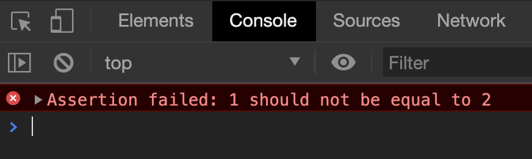

People are weird. They would use your software in ways you cannot imagine. And they will break your software when they do this.
You need to think about how they may break your software and code for these use cases. I call them edge cases.
There are a lot of edge cases for the calculator (as you’ll see in the next lesson). It gets confusing quickly when we need to handle edge cases. So before we tackle edge cases, we will take a detour and test the happy path.
(Testing would turn out to be a shortcut instead).
Note: If you‚Äôd like a challenge, go ahead and build edge cases without writing tests. I guarantee you‚Äôll start ü§¨-ing and üò±-ing soon enough. üòõ.
Testing with console.assert
The console object has an assert method that lets you make assertions. Here’s the syntax:
console.assert(assertion, message)
When you make an assertion (in programming), you state an expression that evaluates to true. If the expression evaluates to true, the test passes. And nothing will be shown in the console.
If the expression evaluates to false, the test fails and you get an error.
console.assert(1 === 1) // true. Assertion passes. No error.
console.assert(1 === 2) // false. Assertion fails. Has error.
You can give yourself more information about the test with the message argument. This message will show up when the test fails.
console.assert(1 === 2, '1 should not be equal to 2')

Creating your first test
Think about what you want to test. For a calculator, we want to make sure the calculator shows the correct result no matter what users punch in.
Let’s make things simple for our first test. If a user presses 2, we want to check whether the calculator shows 2.
We can make JavaScript press a button with the click method. If we want the user to press 2, we need to select the 2 button and use click on it.
If you refresh the page, you should see the calculator shows 2. This is because we used JavaScript to click the button that says 2.
Now we want to make sure the calculator says 2. We do this with console.assert.
Here, we need to get the displayed result from the calculator first. After getting the displayed result, we check whether this displayed result is 2.
const result = calculator.querySelector('.calculator__display').textContent
console.assert(result === 2, 'Number key')
The test failed. But why?
It failed because result (a String) is not strictly equal to 2 (a Number). If we change 2 to a String, the test should pass, and no errors would show up in the console.
const result = calculator.querySelector('.calculator__display').textContent
console.assert(result === '2', 'Number key')
Resetting the calculator
We need to reset the calculator after each test. This ensures results from the current test doesn’t affect the next test.
To reset the calculator, we press the clear button twice.
If the calculator is cleared, it should not have dataset.firstValue and dataset.operator. We’ll ensure they don’t exist.
console.assert(!calculator.dataset.firstValue, 'No first value')
console.assert(!calculator.dataset.operator, 'No operator value')
Creating helper functions
We need to click calculator buttons many times throughout our tests. We should create a function to click a button. It’ll make things easier for us down the road.
We have to write console.assert and reset calculator for every test. This is okay, but it gets tedious. We can create a function called runTest that runs each test.